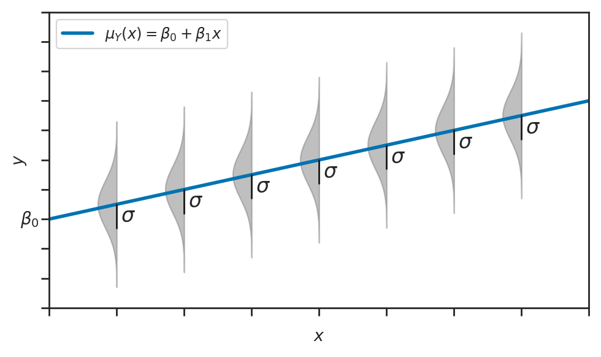
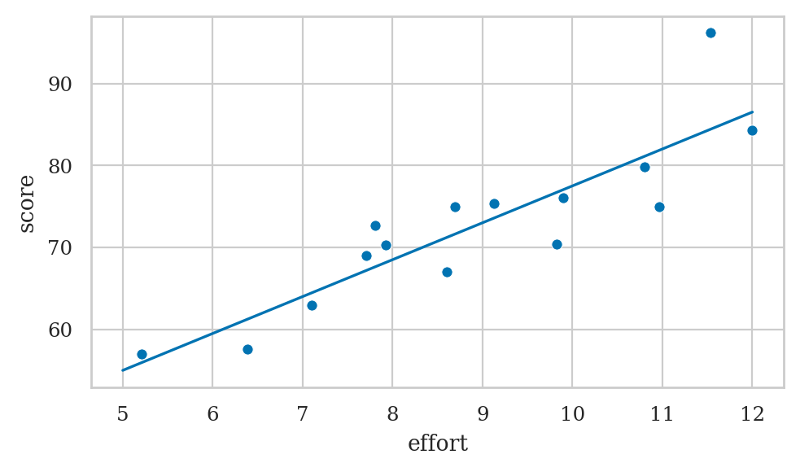
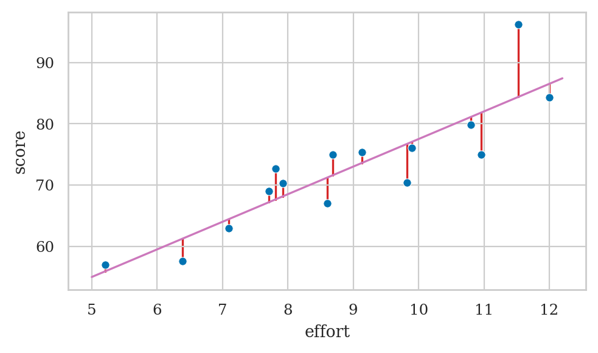
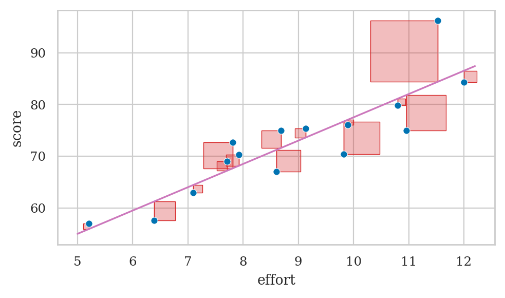
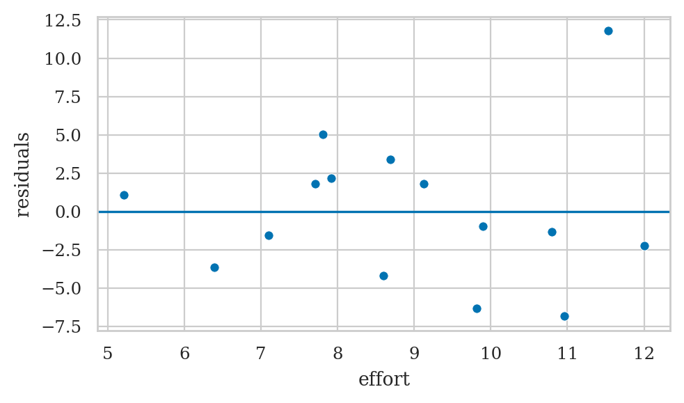
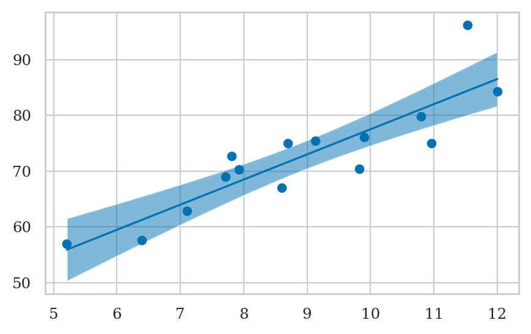

Section 4.1 — Simple linear regression#
This notebook contains the code examples from Section 4.1 Simple linear regression from the No Bullshit Guide to Statistics.
Notebook setup#
# load Python modules
import os
import numpy as np
import pandas as pd
import seaborn as sns
import matplotlib.pyplot as plt
# Figures setup
plt.clf() # needed otherwise `sns.set_theme` doesn't work
from plot_helpers import RCPARAMS
RCPARAMS.update({'figure.figsize': (5, 3)}) # good for screen
# RCPARAMS.update({'figure.figsize': (5, 1.6)}) # good for print
sns.set_theme(
context="paper",
style="whitegrid",
palette="colorblind",
rc=RCPARAMS,
)
# High-resolution please
%config InlineBackend.figure_format = 'retina'
# Where to store figures
DESTDIR = "figures/lm/simple"
<Figure size 640x480 with 0 Axes>
from plot_helpers import plot_residuals
from plot_helpers import plot_residuals2
from plot_helpers import savefigure
# set random seed for repeatability
np.random.seed(42)
import warnings
# silence kurtosistest warning when using n < 20
warnings.filterwarnings("ignore", category=UserWarning)
\(\def\stderr#1{\mathbf{se}_{#1}}\) \(\def\stderrhat#1{\hat{\mathbf{se}}_{#1}}\) \(\newcommand{\Mean}{\textbf{Mean}}\) \(\newcommand{\Var}{\textbf{Var}}\) \(\newcommand{\Std}{\textbf{Std}}\) \(\newcommand{\Freq}{\textbf{Freq}}\) \(\newcommand{\RelFreq}{\textbf{RelFreq}}\) \(\newcommand{\DMeans}{\textbf{DMeans}}\) \(\newcommand{\Prop}{\textbf{Prop}}\) \(\newcommand{\DProps}{\textbf{DProps}}\)
(this cell contains the macro definitions like \(\stderr{\overline{\mathbf{x}}}\), \(\stderrhat{}\), \(\Mean\), …)
Definitions#
Linear model#
from scipy.stats import norm
# Define the linear model function
def linear_model(x):
return 30 + 5 * x
# Define sigma for the normal distribution
sigma = 8
with sns.axes_style("ticks"):
fig, ax = plt.subplots(figsize=(5, 3))
# Plot the linear model
xs = np.linspace(0, 8, 200)
ys = linear_model(xs)
sns.lineplot(x=xs, y=ys, ax=ax, label=r'$\mu_Y(x) = \beta_0 + \beta_1x$', linewidth=2)
# Plot Gaussian distributions at specified x positions and add sigma lines
x_positions = range(1,8)
for x_pos in x_positions:
y_pos = linear_model(x_pos)
ys = np.linspace(y_pos-3.5*sigma, y_pos+3.5*sigma, 100)
pdf = 0.7*norm(loc=y_pos, scale=sigma).pdf(ys)
ax.fill_betweenx(ys, x_pos - pdf * sigma, x_pos, color='grey', alpha=0.5)
# Draw vertical sigma line and label it on the opposite side of the Gaussian shape
ax.plot([x_pos, x_pos], [y_pos, y_pos - sigma], 'k', lw=1)
ax.text(x_pos + 0.06, y_pos - sigma / 2, r'$\sigma$', fontsize=12, va='center')
# y-intercept
ax.text(0 - 0.15, 30, r'$\beta_0$', fontsize=10, va='center', ha='right')
# Set up x-axis
ax.set_xlim([0, 8])
ax.set_xlabel('$x$')
ax.set_xticklabels([])
# Set up y-axis
ax.set_ylim([0, 100])
ax.set_ylabel('$y$')
ax.set_yticks(range(0,110,10))
ax.set_yticklabels([])
ax.legend(loc='upper left')
filename = os.path.join(DESTDIR, "linear_model_xy_with_gaussians.pdf")
savefigure(fig, filename)
Saved figure to figures/lm/simple/linear_model_xy_with_gaussians.pdf
Saved figure to figures/lm/simple/linear_model_xy_with_gaussians.png

Example: students score as a function of effort#
students = pd.read_csv("../datasets/students.csv")
# students.head()
import statsmodels.formula.api as smf
#######################################################
model1 = smf.ols('score ~ 1 + effort', data=students)
fit1 = model1.fit()
# the coefficients of the best-fit line
b0 = fit1.params.Intercept
b1 = fit1.params.effort
b0, b1
(32.465809301599606, 4.504850344209074)
sigma = np.sqrt(fit1.scale)
# ALT.
# sigma = np.sqrt(np.sum(fit1.resid**2)/fit1.df_resid)
sigma
4.929598282660258
# fit1.summary()
sns.scatterplot(data=students, x='effort', y='score')
xs = np.linspace(5, 12)
yhats = b0 + b1*xs
sns.lineplot(x=xs, y=yhats, color="b");
filename = os.path.join(DESTDIR, "students_scores_vs_effort_with_line.pdf")
savefigure(plt.gcf(), filename)
Saved figure to figures/lm/simple/students_scores_vs_effort_with_line.pdf
Saved figure to figures/lm/simple/students_scores_vs_effort_with_line.png

# # ALT.
# sns.regplot(data=students, x="effort", y="score", ci=None);
Parameter estimation using least squares#
How do we find the parameter estimates of the model?
plot_residuals(students["effort"], students["score"], b0, b1)
sns.scatterplot(data=students, x='effort', y='score')
xs = np.linspace(5, 12.2)
yhats = b0 + b1*xs
sns.lineplot(x=xs, y=yhats, color="C4");
filename = os.path.join(DESTDIR, "students_scores_with_residuals.pdf")
savefigure(plt.gcf(), filename)
Saved figure to figures/lm/simple/students_scores_with_residuals.pdf
Saved figure to figures/lm/simple/students_scores_with_residuals.png

ax = sns.scatterplot(data=students, x='effort', y='score', zorder=4)
xs = np.linspace(5, 12.2)
yhats = b0 + b1*xs
sns.lineplot(x=xs, y=yhats, color="C4", zorder=5)
plot_residuals2(students["effort"], students["score"], b0, b1, ax=ax);
filename = os.path.join(DESTDIR, "students_scores_with_residuals_squared.pdf")
savefigure(plt.gcf(), filename)
Saved figure to figures/lm/simple/students_scores_with_residuals_squared.pdf
Saved figure to figures/lm/simple/students_scores_with_residuals_squared.png

Model diagnostics#
Residuals plots#
ax = sns.scatterplot(x=students["effort"], y=fit1.resid)
ax.set_ylabel("residuals")
ax.axhline(y=0, color='b');
filename = os.path.join(DESTDIR, "residuals_plot_vs_effort.pdf")
savefigure(plt.gcf(), filename)
Saved figure to figures/lm/simple/residuals_plot_vs_effort.pdf
Saved figure to figures/lm/simple/residuals_plot_vs_effort.png

# # ALT.
# sns.residplot(data=students, x="effort", y="score", lowess=True, color="g");
Sum of squares quantities#
fit1.centered_tss
1394.2040000000002
fit1.ess
1078.2917900307098
fit1.ssr
315.91220996929053
Coefficient of determination \(R^2\)#
fit1.ess / fit1.centered_tss
0.7734103402591799
fit1.rsquared
0.7734103402591798
Model summary table#
fit1.summary()
| Dep. Variable: | score | R-squared: | 0.773 |
|---|---|---|---|
| Model: | OLS | Adj. R-squared: | 0.756 |
| Method: | Least Squares | F-statistic: | 44.37 |
| Date: | Wed, 06 Mar 2024 | Prob (F-statistic): | 1.56e-05 |
| Time: | 08:47:11 | Log-Likelihood: | -44.140 |
| No. Observations: | 15 | AIC: | 92.28 |
| Df Residuals: | 13 | BIC: | 93.70 |
| Df Model: | 1 | ||
| Covariance Type: | nonrobust |
| coef | std err | t | P>|t| | [0.025 | 0.975] | |
|---|---|---|---|---|---|---|
| Intercept | 32.4658 | 6.155 | 5.275 | 0.000 | 19.169 | 45.763 |
| effort | 4.5049 | 0.676 | 6.661 | 0.000 | 3.044 | 5.966 |
| Omnibus: | 4.062 | Durbin-Watson: | 2.667 |
|---|---|---|---|
| Prob(Omnibus): | 0.131 | Jarque-Bera (JB): | 1.777 |
| Skew: | 0.772 | Prob(JB): | 0.411 |
| Kurtosis: | 3.677 | Cond. No. | 44.5 |
Notes:
[1] Standard Errors assume that the covariance matrix of the errors is correctly specified.
Using linear models to make predictions#
Confidence interval for observations#
Confidence interval for the mean#
from plot_helpers import simple_regplot
efforts = students["effort"]
scores = students["score"]
simple_regplot(efforts, scores)
<statsmodels.regression.linear_model.RegressionResultsWrapper at 0x7f510838cf70>

Explanations#
Strategies for fitting linear models#
Analytical formulas#
efforts = students["effort"]
scores = students["score"]
meaneffort = efforts.mean()
meanscore = scores.mean()
#######################################################
num = sum((efforts - meaneffort)*(scores - meanscore))
denom = sum( (efforts - meaneffort)**2 )
b1 = num / denom
b1
4.504850344209071
# # ALT.
# np.cov(efforts, scores, ddof=0)[0,1] / np.var(efforts, ddof=0)
b0 = scores.mean() - b1*efforts.mean()
b0
32.46580930159963